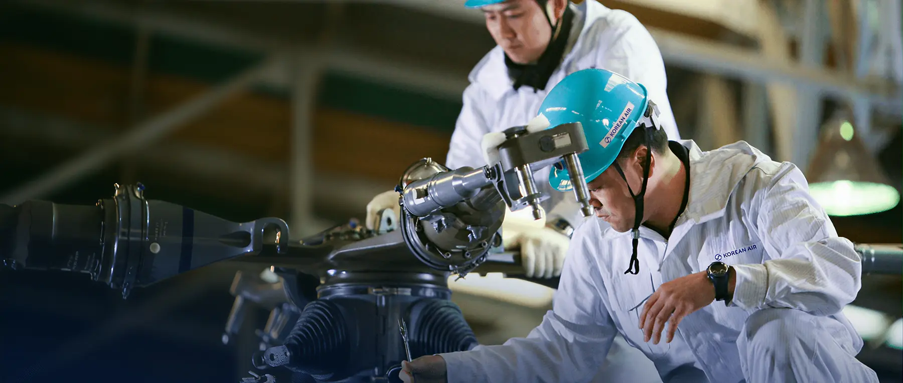

채용 공고
민항기 부품과 무인기 설계 개발 및 제작, 군용기 MRO, 우주 발사체 분야의 전문 관리자 및 Engineer & Mechanic을 양성합니다.
항공우주사업본부 관련 공고입니다. 지원과 상세 요강은 대한항공 채용 사이트에서 확인할 수 있습니다.
기술직 · 항공우주
항공우주 기술직은 관리·기술·품질·연구 네 부문에서 민항기 부품 생산, 군용기 정비, 유·무인 항공기와 우주 발사체 개발을 담당합니다.
관리 부문
민항기 부품 생산과 군용기 정비를 위한 본부의 장단기 사업 기획 및 영업, 사업 집행 관리, 세부 생산 계획을 수립합니다. 진척 관리, 인적 자원 관리, 보급 관리 등 전반적인 생산 및 RESOURCE(MAN, MACHINE, MATERIAL, METHOD)를 운영·관리합니다.
기술 부문
민항기 부품 생산과 군용기 정비에 있어서 기술 지원 방식을 수립 및 지시하며, 작업공정서를 작성하고 개정합니다. 신규 공정을 설계하고, 기술 변경에 따른 형상관리, 각종 기술 개발에 관한 검토 및 연구 업무를 수행합니다.
품질 부문
품질 계약 조건, 고객 요구사항, 품질 경영 시스템 요구사항 등을 검토하여 품질/검사 시스템을 계획하고 품질계획서를 작성합니다. 부품 생산 및 군용기 정비 결과를 모니터링하고 결함 원인 조사와 방지 대책 수립으로 품질 보증·개선 업무를 수행합니다.
연구 부문
첨단 기술 선도형 유·무인 항공기, 우주 발사체 및 위성체, 항공기 성능 개량/개조 분야를 연구 개발합니다. 비행체공력, 비행제어, 항공전자, 기체구조의 설계·해석 및 체계 종합, 시험 평가 등 전문 기술 분야별 업무를 수행합니다.
교육 훈련 프로그램을 통해 단계별 직무 교육과 개별·보수 교육을 받으며, 직무 순환과 해외 파견 등 다양한 양성교육체계로 역량을 키웁니다.
대한항공의 인사제도는 양성, 평가, 보상체계가 유기적으로 연계된 종합 인사시스템을 지향합니다. 전임직부는 정비 및 항공우주 현장의 전문 인력 양성을 목표로 합니다.
평가는 역량평가와 성과평가를 중심으로, 동료평가와 관리자 리더십조사를 함께 운영해 공정하고 투명한 인사관리를 구현합니다.
여행 지원
- 직원용 할인 항공권(국내선·국제선)
- 결혼·효도·청원 항공권
- 협정 타항공사 할인 항공권
- 장기근속·정년퇴직 여행 지원, 콘도 지원
건강증진
- 부속의원 및 의료 전문인력 상주
- 전 직원 건강검진(특수항목 포함)
- 기초체력측정·운동상담·영양상담
- 피트니스센터 및 수영장 운영
주택 지원
- 사택 지원 : 인천, 부산, 김해 등
- 주택구입자금, 전세자금 지원
학자금 · 보육
- 자녀 학자금(국내외 고등학생·대학생)
- 장애자녀 특수교육비, 보육비 지원
- 직원 대학원 장학금(인하대 국제물류대학원, 항공대 특수대학원 등)
경조사 지원
- 결혼·회갑/고희·출산·사망 경조금
- 화환, 장의용품·생수 지원
생활 · 사회보장
- 국민연금·개인연금, 4대 보험·자가보험 지원
- 선택적 복지제도(전용 복지몰), 사내근로복지기금
- 25개 동호회, 직원식당, 커피라운지
신입사원 공개채용 기준입니다. 전문인력·연구개발·인턴 등 공고별 절차는 요강에서 확인하세요.
지원은 대한항공 채용 사이트에서
공고별 모집 분야, 지원 자격, 일정을 확인하고 지원할 수 있습니다.